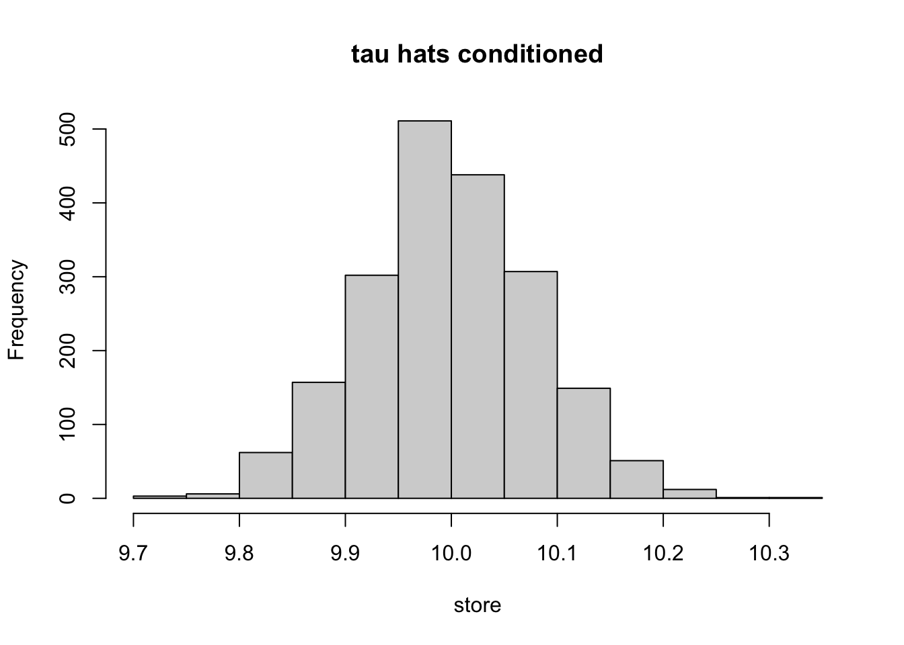

3.8 Assessing Balance
##########################################
#
#
# Assessing Balance
#
#
##########################################
XX <- X[c(index), ]
YY <- Y[c(index)]
WW <- W[c(index)]
e.hat <- c(predict.mat)
# unadjusted
means.treat <- apply(XX[WW == 1, ], 2, mean)
means.control <- apply(XX[WW == 0, ], 2, mean)
abs.mean.diff <- abs(means.treat - means.control)
var.treat <- apply(XX[WW == 1, ], 2, var)
var.control <- apply(XX[WW == 0, ], 2, var)
std <- sqrt(var.treat + var.control)
# adjusted
means.treat.adj <- apply(XX*WW / e.hat, 2, mean)
means.control.adj <- apply(XX*(1 - WW) / (1 - e.hat), 2, mean)
abs.mean.diff.adj <- abs(means.treat.adj - means.control.adj)
var.treat.adj <- apply(XX * WW / e.hat, 2, var)
var.control.adj <- apply(XX * (1 - WW) / (1 - e.hat), 2, var)
std.adj <- sqrt(var.treat.adj + var.control.adj)
# plot unadjusted and adjusted differences
par(oma=c(0,4,0,0))
plot(-2, xaxt="n", yaxt="n", xlab="", ylab="", xlim=c(-.01, 1.01), ylim=c(0, ncol(XX)+1), main="")
axis(side=1, at=c(-1, 0, 1), las=1)
lines(abs.mean.diff / std, seq(1, ncol(XX)), type="p", col="blue", pch=19)
lines(abs.mean.diff.adj / std.adj, seq(1, ncol(XX)), type="p", col="orange", pch=19)
legend("topright", c("Unadjusted", "Adjusted"), col=c("blue", "orange"), pch=19)
abline(v = seq(0, 1, by=.25), lty = 2, col = "grey", lwd=.5)
abline(h = 1:ncol(XX), lty = 2, col = "grey", lwd=.5)
mtext(paste0("X", seq(1, ncol(XX))), side=2, cex=0.7, at=1:ncol(XX), padj=.4, adj=1, col="black", las=1, line=.3)
abline(v = 0)
hist(e.hat, breaks = 100, freq = FALSE)